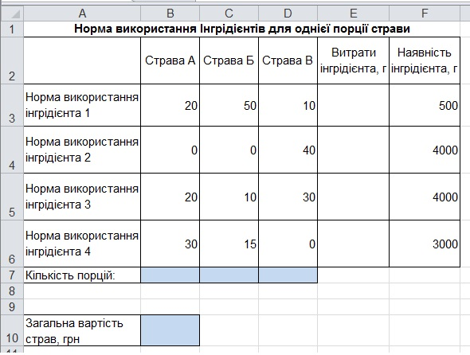
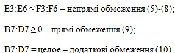
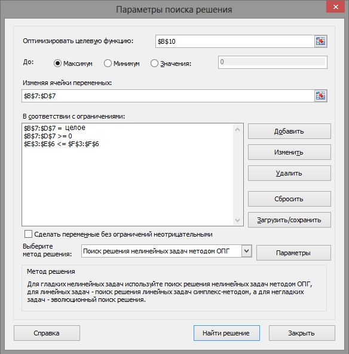
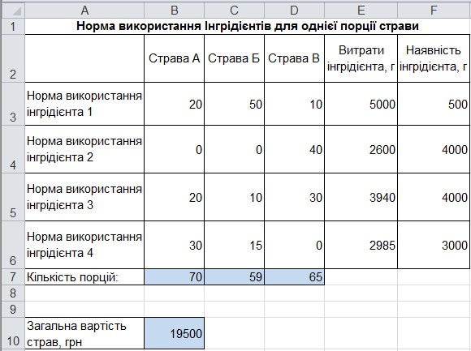
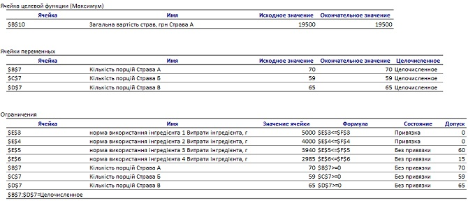

Вправа 6.2. Розв'язання задачі лінійного програмування
У ресторані готують фірмові страви трьох видів (страва А, страва Б, страва В), використовуючи інгредієнти чотирьох видів (інгредієнт 1, інгредієнт 2, інгредієнт 3, інгредієнт 4). Норму використання інгредієнтів (у грамах) для приготування однієї порції кожної страви наведено у табл. 6.1.
Таблиця 6.1. Норма інгредієнтів для приготування однієї порції страви
Вартість однієї порції страви А становить 120 грн, страви В – 100 грн, а страви С – 80 грн. Щодня до ресторану доставляють 5 кг інгредієнта 1, по 4 кг інгредієнтів 2 і 3 та 3 кг інгредієнта 4. Потрібно визначити, яку кількість порцій кожної з фірмових страв слід приготувати, щоб загальна вартість страв була максимальною.
Побудова математичної моделі
Складемо математичну модель задачі.
- Введемо позначення: – кількість порцій страви А, – кількість порцій страви Б, – кількість порцій страви В.
- Загальну вартість страв можна визначити за формулою 120x1 + 100x2 + 80x3 – це і буде формула цільової функції. Її потрібно максимізувати.
- Як видно з табл. 6.1, для приготування страви А потрібно використати 10 г інгредієнта 1. Отже, для приготування порцій страви А треба використати 10x1 грам цього інгредієнта. Аналогічно, для виготовлення порцій страви Б потрібно 50x2 г інгредієнта 1, а для порцій страви В – 10x3 г цього інгредієнта. Оскільки його загальна маса становить 5 кг (5000 г), то обмеження для інгредієнта 1 матиме вигляд 10x1 + 50x2 + 10x3
 5000. У цьому обмеженні ліва частина визначає потреби в інгредієнті 1, а права вказує на його наявну кількість. У такий самий спосіб можна скласти обмеження для інших інгредієнтів.
5000. У цьому обмеженні ліва частина визначає потреби в інгредієнті 1, а права вказує на його наявну кількість. У такий самий спосіб можна скласти обмеження для інших інгредієнтів.
Врахувавши, що кількості порцій – це цілі невід'ємні числа, отримаємо таку модель задачі:
Розв'язання задачі
Розв'яжемо отриману задачу лінійного програмування за допомогою інструмента Пошук розв'язку табличного процесора Excel.
- Створіть нову електронну книгу. Заповніть таблицю даними за зразком, наведеним на рис. 6.9. Збережіть файл під іменем Впpaвa_6_2.xlsx.
Значення змінних , , (шукана кількість порцій) зберігатимуться у клітинках B7:D7.
Рис. 6.9. Вхідні дані для задачі лінійного програмування - У клітинку B10 введіть формулу визначення цільової функції: =120*В7+100*C7+80*D7 та натисніть клавішу Enter.
- Виділіть клітинку ЕЗ, введіть до неї формулу лівої частини обмеження (5) =$B$7*B3+$C$7*C3+$D$7*D3 та натисніть клавішу Enter. Скопіюйте формулу з клітинки ЕЗ у клітинки Е4:Е6. Зверніть увагу, що посилання на клітинки змінних є абсолютними, тому під час копіювання формули вони не змінюються. Натомість змінюються посилання на клітинки з коефіцієнтами обмежень, і, таким чином, у кожній з клітинок Е4:Е6 ми отримаємо формулу нового обмеження.
- Виконайте команду Дані
 Аналіз Пошук розв'язку та заповніть поля (рис. 6.10.) у діалоговому вікні Поиск решения (Пошук розв'язку).
Аналіз Пошук розв'язку та заповніть поля (рис. 6.10.) у діалоговому вікні Поиск решения (Пошук розв'язку).
- У поле Установить целевую ячейку (Установити цільову клітинку) введіть адресу клітинки BIO, що містить значення цільової функції;
- перемикач Равной (Рівній) установіть у положення максимальному значению (максимальному значенню);
- у поле Изменяя ячейки (Змінюючи клітинки) уведіть адресу діапазону B7:D7, де містяться значення змінних;
- у список Ограничения (Обмеження), користуючись кнопкою Добавить (Додати), введіть такі нерівності:

F3:F6 еквівалентне сукупності обмежень ЕЗ F3; Е4 F4; Е5 F5; Е6 F6.

Рис. 6.10. Вікно Поиск решения під час розв'язання задачі лінійного програмування - Клацніть кнопку Выполнить (Виконати), у вікні Результаты поиска решения (Результати пошуку розв'язку) зі списку Тип отчета (Тип звіту) виберіть значення Результаты (Результати) і клацніть кнопку ОК. Буде знайдено розв'язок оптимізаційної задачі (рис. 6.11) і створено новий аркуш Отчет по результатам 1 (Звіт за результатами 1). Збережіть таблицю на диску.

Рис. 6.11. Таблиця з розв'язком оптимізаційної задачі - Зробіть висновок: за наявних інгредієнтів для максимізації вартості страв їх слід приготувати в такій кількості: страва А – 70 порцій, страва Б – 59 порцій, страва В – 65 порцій. При цьому загальна вартість страв становитиме 19 500 грн.
- Щоб проаналізувати розв'язок детальніше, перейдіть на аркуш Отчет по результатам 1 (Звіт за результатами 1). Отриманий звіт складається з трьох таблиць (рис. 6.12).
З таблиці Ограничения (Обмеження) отриманого звіту, зокрема, видно, що інгредієнти типу 1 та 2 будуть використані повністю, інгредієнта типу 3 залишиться 60 г, а інгредієнта типу 4 – 15 г.
- У таблиці Целевая ячейка (Цільова клітинка) наведені дані про цільову функцію. У стовпці Исходное значение (Початкове значення) наведене значення цільової функції до початку обчислень, у стовпці Результат – її кінцеве значення.
- У стовпці Результат таблиці Изменяемые ячейки (Змінювані клітинки) наведені значення змінних, отримані в результаті розв'язання задачі.
- У таблиці Ограничения (Обмеження) показано, які обмеження для знайденого результату виконуються як рівності (їх називають зв'язаними), а які – як нерівності (це незв'язані обмеження). У стовпці Разница (Різниця) цієї таблиці показано залишки інгредієнтів, що відповідають незв'язаним обмеженням.

Рис. 6.12. Звіт за результатами розв'язання задачі